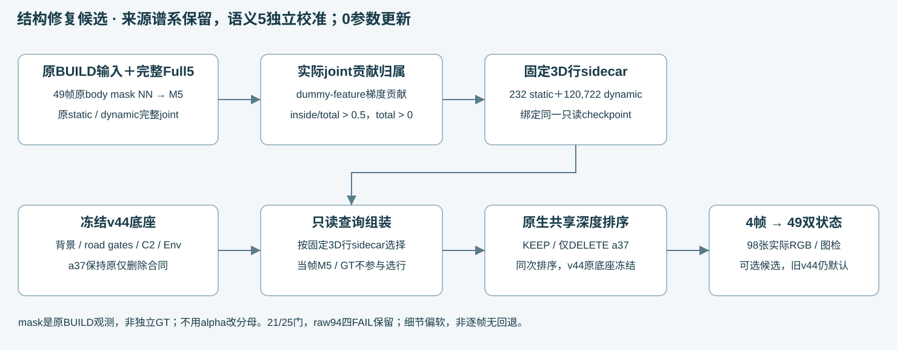
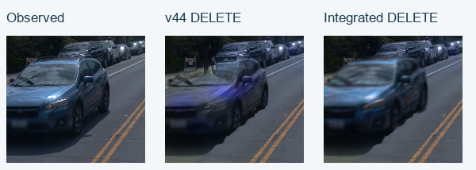
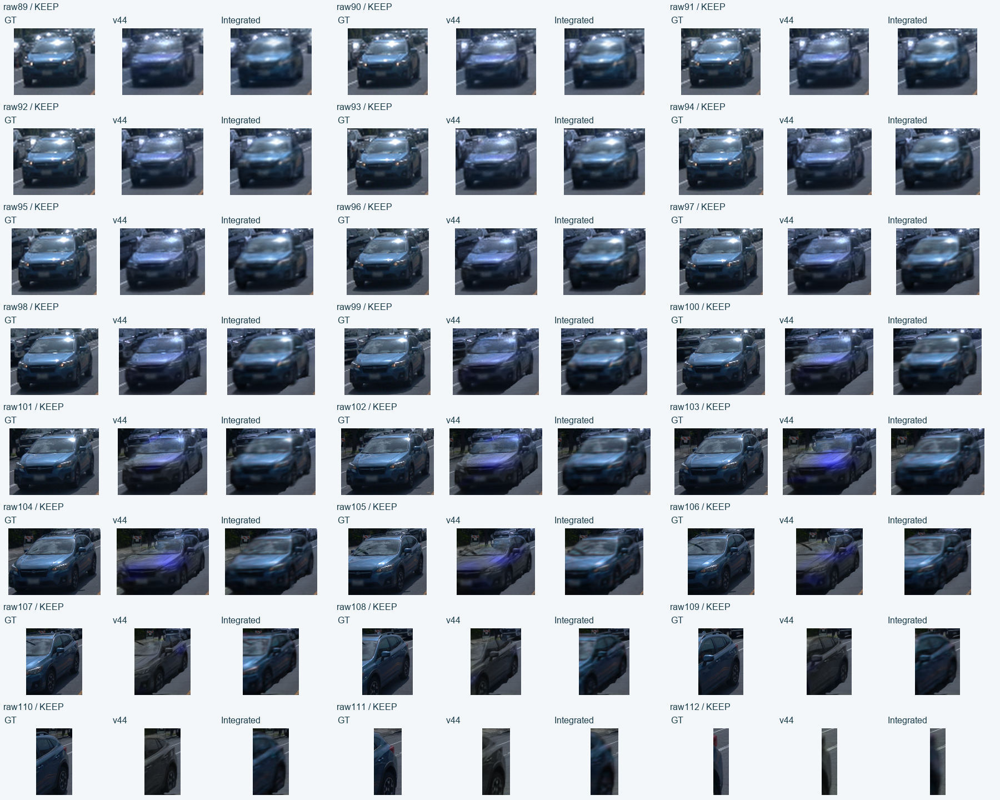
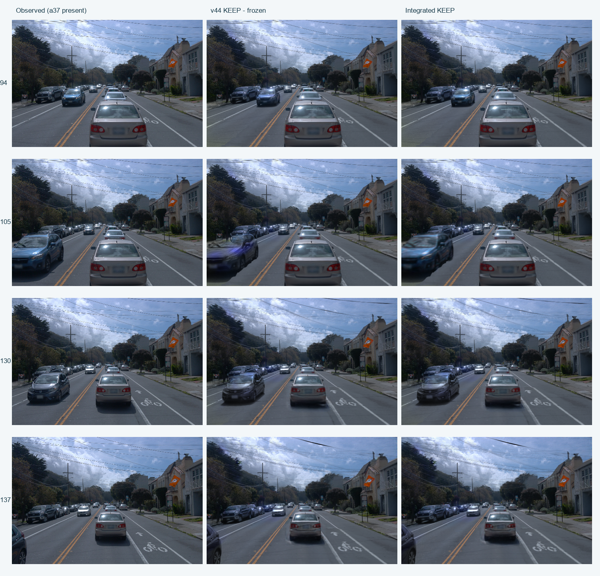
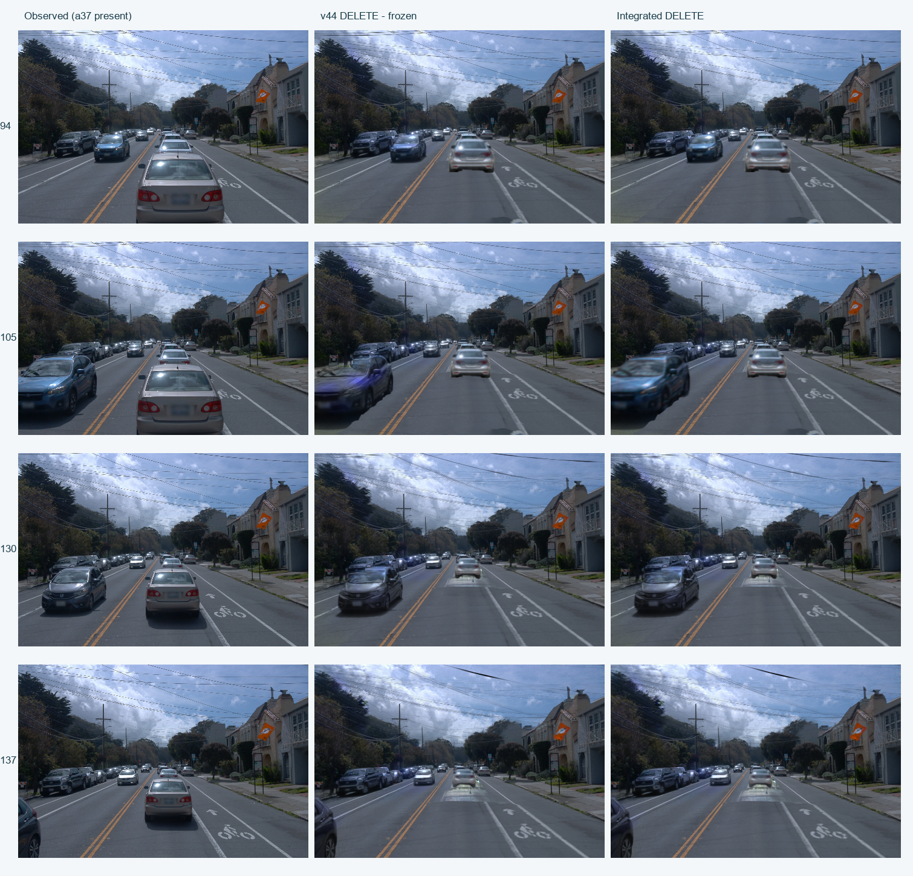
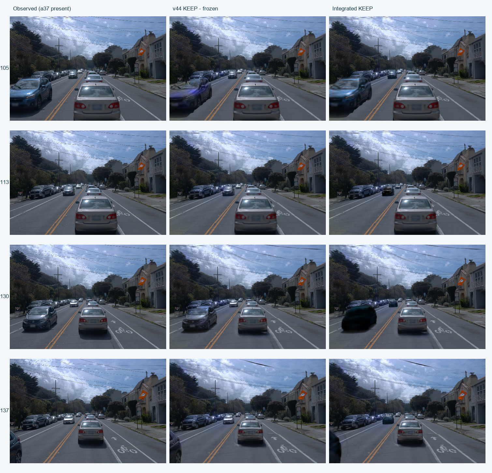
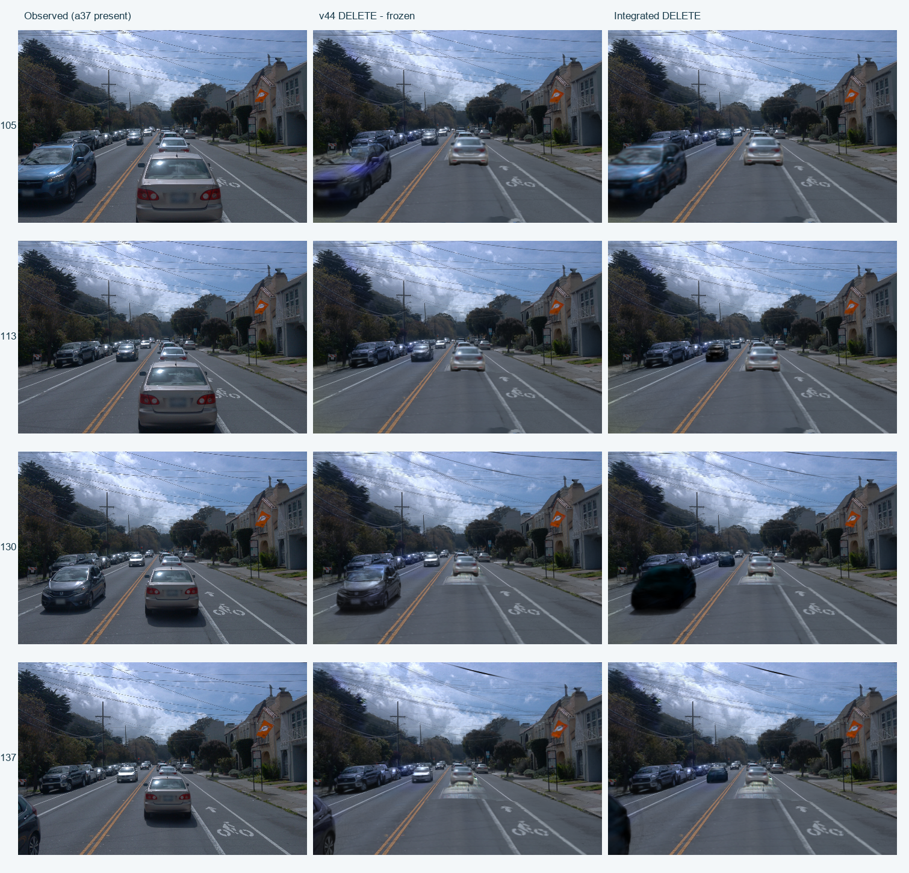
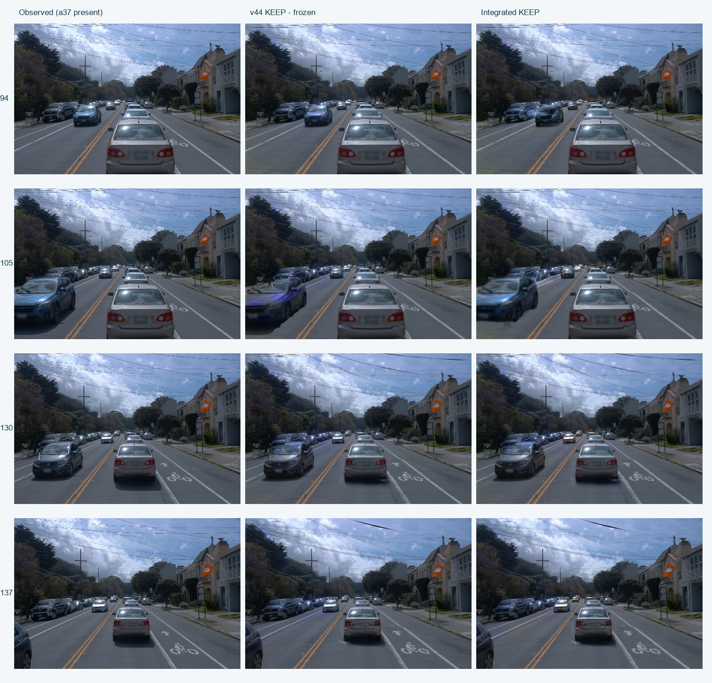
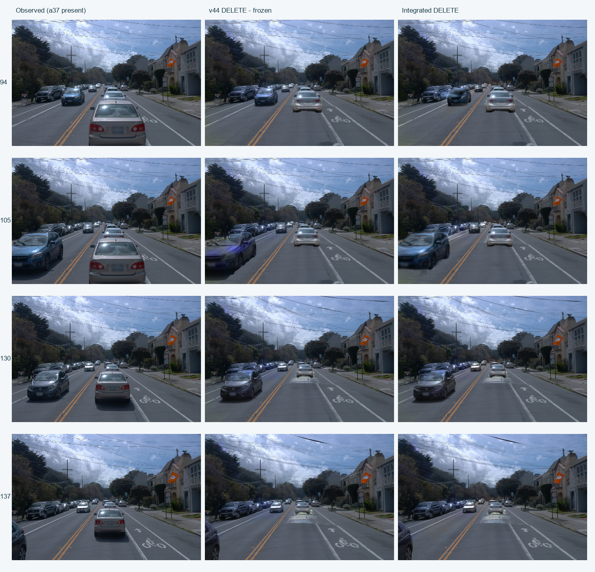

Scene008：保留v44删车效果的a5车顶恢复候选
49帧双状态结果已交付。root实际查看全部24个a5可见帧后，确认车顶、挡风玻璃与车体连续可辨，早段黑暗车体问题消失；细节仍偏软。中央#fullclip新增可选“v44＋a5车顶恢复（候选，细节偏软）”，旧v44保持默认并可切回。严格光度门仍为21/25，raw94四项FAIL与12/24可见帧RGB回退原样保留；不是无损升级，也没有人工质量采纳。
使用已完成的Full5 10K重建，通过原BUILD实例mask核对实际成像贡献，再把固定3D行接入冻结v44。原v44背景、道路去蓝、完整C2 a6、环境与a37删除规则保持。此次接入新增训练更新为0。
组件与数据流

车顶与挡风玻璃：raw105同尺度对照
左到右：真实Observed、正式v44、候选。固定窗口(0,160)–(175,320)，直接粘贴原像素；数值仍在完整固定mask域计算。
仅DELETE a37

完整KEEP
KEEP全a5可见域MAE变化-23.26%，固定上部变化-33.38%。这两个加权结果不覆盖早帧回退；只判断实际可见表面。
49数值：a5车顶恢复候选（细节偏软）
原25项门有21项通过。原94/105的full/upper严格门保持原判定，不以结构图检或加权平均覆盖局部FAIL。 KEEP全a5域回退帧为[89, 90, 91, 92, 93, 94, 95, 96, 97, 98, 99, 112]；全域、上部、逐帧变化分别保留，不宣称逐帧无回退。
| 状态 | 原始固定域 | 像素帧 | 正式v44 | 当前诊断 | ΔMAE / 相对变化 |
|---|---|---|---|---|---|
| KEEP | 全a5可见域 | 121,128 | 0.045418 | 0.034855 | -0.010563 (-23.26%) |
| KEEP | 固定包围盒高度上25% | 25,906 | 0.077344 | 0.051528 | -0.025816 (-33.38%) |
| DELETE | 全a5可见域 | 121,128 | 0.045453 | 0.034881 | -0.010573 (-23.26%) |
| DELETE | 固定包围盒高度上25% | 25,906 | 0.077349 | 0.051529 | -0.025820 (-33.38%) |
RGB通道MAE来自已保存float，单位0–1，按固定像素帧数加权；没有从PNG反算或按新alpha筛域。49视图中的a5可见帧只有24个；upper不是按像素数取上25%，也不是独立车顶标注。
24个可见帧逐帧a5全域变化（正数为回退）
| raw | 固定像素 | KEEP ΔMAE | DELETE ΔMAE |
|---|---|---|---|
| 89 | 1227 | +0.010731 | +0.010393 |
| 90 | 1316 | +0.013451 | +0.013306 |
| 91 | 1470 | +0.013135 | +0.013068 |
| 92 | 1618 | +0.009781 | +0.009529 |
| 93 | 1829 | +0.006755 | +0.006678 |
| 94 | 2052 | +0.008211 | +0.008297 |
| 95 | 2276 | +0.007207 | +0.007220 |
| 96 | 2647 | +0.008775 | +0.008746 |
| 97 | 3010 | +0.009867 | +0.009852 |
| 98 | 3460 | +0.007621 | +0.007621 |
| 99 | 4021 | +0.001320 | +0.001320 |
| 100 | 4684 | -0.000688 | -0.000688 |
| 101 | 5502 | -0.002750 | -0.002750 |
| 102 | 6502 | -0.004964 | -0.004964 |
| 103 | 7840 | -0.014026 | -0.014026 |
| 104 | 9659 | -0.016440 | -0.016440 |
| 105 | 10773 | -0.022962 | -0.022962 |
| 106 | 11291 | -0.029967 | -0.029967 |
| 107 | 11367 | -0.026774 | -0.026774 |
| 108 | 9900 | -0.017073 | -0.017073 |
| 109 | 8178 | -0.004974 | -0.004974 |
| 110 | 6418 | -0.007872 | -0.007872 |
| 111 | 3451 | -0.003831 | -0.003831 |
| 112 | 637 | +0.011311 | +0.011311 |
49视图：a5车顶恢复候选（细节偏软）双状态真实PNG
共98张候选原生PNG。以下只显示已保存RGB，不借用旧Gaussian或depth面板；Observed中a37在场，不能作为DELETE隐藏道路真值。


点击任一图可看原480×320文件。全片数值与发布门仍按实际收据与root图检分别记录。49视图配对指标
全部24个a5可见帧：GT / v44 / 集成，同原mask裁剪
逐帧用原始GT可见mask包围盒外扩6像素，三列使用相同裁剪和显示缩放；各帧缩放可以不同。仅为显示，指标仍在原像素域。只判断实际可见部分，不推断被遮挡或出画表面。
KEEP

DELETE a37
保住了哪些v44效果
下表是同固定评价域的逐帧最坏指标变化，不是宣称整图像素相同。DELETE道路与固定道路蓝值逐帧变化为0；两状态a6 RGB/深度、KEEP a37指标变化为0。其余保护域在原阈值内。另有更强的保存float逐像素核对：全部49两状态的原a6可见RGB/测深、KEEP a37可见RGB，以及DELETE固定road_edit∩ground域RGB，candidate对正式v44最大差均为0；只限这些固定域，不延伸为整帧或全车无变化。
| 原守护项 | 最坏帧Δ指标 | 原上限 | 结果 |
|---|---|---|---|
| KEEP a6 RGB | +0.0000000 | 0.001 | PASS |
| KEEP a6深度（m） | +0.0000000 | 0.010 | PASS |
| KEEP a37 RGB | +0.0000000 | 0.001 | PASS |
| DELETE a6 RGB | +0.0000000 | 0.001 | PASS |
| DELETE a6深度（m） | +0.0000000 | 0.010 | PASS |
| DELETE道路 RGB | +0.0000000 | 0.005 | PASS |
| DELETE固定道路蓝值 | +0.0000000 | 0.005 | PASS |
| KEEP保护域 RGB | +0.0002836 | 0.005 | PASS |
| DELETE保护域 RGB | +0.0002835 | 0.005 | PASS |
相机、时间、旧v44行、颜色、前缀mask与Env hash均守恒；DELETE原物理a37组贡献为0。它们说明受测合同得到保持，不以ID计数或alpha替代图像质量。原蓝ROI在raw113/137分母为0时继续为null；原silver残片延期项没有被冒称解决。
明确保留的画质取舍
KEEP全a5 RGB误差回退的12帧为raw89–99及112；最坏raw90为ΔMAE +0.013451。近处缺顶结构恢复，但早段高光和细节较软。raw112只见出画边缘，不推断完整隐藏车体。
| 原严格改善门 | ΔRGB MAE，0–1 | 要求 | 结果 |
|---|---|---|---|
| keep:raw94:a5_RGB | +0.008211 | < 0（原阈值） | FAIL |
| keep:raw94:a5_upper_RGB | +0.004767 | < 0（原阈值） | FAIL |
| delete:raw94:a5_RGB | +0.008297 | < 0（原阈值） | FAIL |
| delete:raw94:a5_upper_RGB | +0.004741 | < 0（原阈值） | FAIL |
四项失败没有改阈值、换域或删帧。root是在保留这些失败的前提下授权全49诊断与可选候选交付，原worker的quality_accepted=false和publication_accepted=false原文保留；另存root结构图检/发布门。human_verdict=null。
这些49帧是同场景训练视图的重建与工程诊断，不是独立泛化测试。Observed中a37仍在，没有删除后隐藏道路的真实GT。alpha覆盖不能单独证明车体完整；同一BUILD mask也不作为独立语义真值。
先四帧，再完整49
最初四帧105/113/130/137只含一个a5视角。完整49暴露早段失败后，新四帧改为94/105/130/137并保留原门。下面为最终49BUILD-fit候选的四帧原图板；同帧重放到完整49的编码PNG字节完全相同。
KEEP / DELETE四帧全图，原480×320直接拼接


四帧未resize的源PNG
| raw | 原生文件 |
|---|---|
| 94 | Observed · v44 KEEP · v44 DELETE · 候选KEEP · 候选DELETE |
| 105 | Observed · v44 KEEP · v44 DELETE · 候选KEEP · 候选DELETE |
| 130 | Observed · v44 KEEP · v44 DELETE · 候选KEEP · 候选DELETE |
| 137 | Observed · v44 KEEP · v44 DELETE · 候选KEEP · 候选DELETE |


身份来自实际贡献，来源谱系仍保留
49×5共245张原BUILD实例mask已经CPU逐像素校验：原body mask最近邻缩到480×320后，等于保存的actor_labels。a5对应label1；完整M5与补集进入贡献累计，不按alpha选评价域。
完整Full5 joint的dummy-feature梯度给出M5内贡献与总贡献的未归一化SUM。固定选择条件为inside/total > 0.5且total > 0。最终只读sidecar包含static 232行、dynamic 120,722行（原来源5：118,133行；来源37：2,589行）。捕获这些BUILD视图M5贡献的94.76%；所选点的M5外贡献占其总贡献2.58%。这些是贡献比例，不是语义概率或质量通过率。
QUERY按固定三维行sidecar与模型指纹做行选择，不依赖当帧a5 mask或GT做选择；原v44输入依赖保持，其原始观测载荷可含RGB/actor_labels用于原评估。两状态接入相同语义5行。原来源37中参与a5成像的行被单独纳入语义5保留组，原owner与谱系元数据并未改写；DELETE仍去除v44原物理a37组。没有按bbox、近邻或逐帧渲染mask改行。v44旧static没有退役，新旧表示可能重叠；没有声称获得完美语义分解。
来源矩阵、BUILD输入与独立sidecar审计
| 原来源 | 模型行 | 选中行 | 49视图未观测行 |
|---|---|---|---|
| static | 1,469,977 | 232 | 1,003,160 |
| 5 | 281,391 | 118,133 | 88,420 |
| 6 | 42,081 | 0 | 4,535 |
| 18 | 10,273 | 0 | 296 |
| 26 | 135,125 | 0 | 37,331 |
| 37 | 538,607 | 2,589 | 128,571 |
245张输入CPU审计 · 审计源码 · 49张合法BUILD M5来源/SHA · 49贡献收据 · 独立sidecar CPU复算 · 固定行与权重指纹合同
4个已有view mass精确复用，仅补45次forward/backward；没有把49视图重算记两遍。未观测行不自动视为已知背景。原joint loss只消费动态union，没有当前逐actor RGB/alpha监督合同。
保留的探索与负结果
| 候选 | 实际结果 | 不可覆盖的原证据 |
|---|---|---|
| 5 / 18 / 26来源一起接入 | 四帧有黑糊车辆，视觉失败；未扩49 | 原始证据 |
| 只接来源5 | raw105改善，但全49 a5误差+1.68%，13帧回退；停止发布 | 原始证据 |
| 退役旧static中可证明的a5源后代 | raw94仍黑、道路/保护域失败；未扩49 | 原始证据 |
| 4个BUILD视图贡献归属 | 黑暗大幅缓解；raw94四光度门失败 | 原始证据 |
| 49个BUILD视图贡献归属，先四帧 | 21/25；四项FAIL保留。root明确仅授权完整49诊断 | 原始证据 |
SH桥接控制中，原生SH与相同模型的预计算RGB最大差1.192×10⁻⁷、alpha差0；受控桥接通过不等于混合质量通过，也不能把来源标签当当前语义。
历史原图板与冻结报告
5 / 18 / 26来源一起接入：原四帧图板


退役旧static中可证明的a5源后代：原四帧图板


4个BUILD视图贡献归属：原四帧图板
49个BUILD视图贡献归属，先四帧：原四帧图板

复现与交付
公开CLI已真实执行raw105 DELETE：1次forward，编码PNG与完整49结果字节相同；CPU describe在隐藏CUDA时也通过。累计本次接入303次raster kernel forward、49次dummy-feature backward，0次优化更新；其中SH首失败3次与重试6次已单列。所有本任务worker已退出、无后续GPU队列；GPU保持开机。
下载必要语义身份包（17.13 MB） · 本机归档及43文件逐SHA校验。包SHA256：4f8a1933bda0d604f04447628e9dbfb7ba526204176865c572d49ee32b01c1e8。包含固定行、贡献累计、来源谱系、协议与依赖代码；没有重复打包Gaussian权重，不是自含完整v44权重包。运行还依赖冻结v44资产、已验证Full5 inference10k权重和兼容的原生CUDA扩展。
原Full5权重备份位于同工作区outputs/scene008_identity_edit_interface_20261107/model/inference10k_delivery.tar.gz（SHA256 6581bfc907f527e322aebdf674c66cd3b75b0cf7321a7f67fff22a0e67277a80）。原训练Adam完整状态仍保留远端；此页的语义包不替代训练恢复包。
来源、合同、验证、回执与源码
- 完整49原始summary（保留photometric FAIL）
- 独立CPU逐帧指标/25项门
- 每状态参数、前缀mask与环境守恒
- 49双状态固定保护域逐像素float最大差0
- root实际全24结构图检与候选发布门
- 单一执行/取回总核验
- 全部303F / 49B账本
- 公开CLI真实1F对照
- 所有本任务worker退出/无未来队列
- 中央viewer备份/147图SHA/默认保留
- 真实Chrome22项运行QA
- 报告真实Chrome八项双状态控制QA
- 完整49诊断预封合同
- 原v44四帧原链重放
- 基准/路径与逐图来源
- 原SH与预计算RGB控制
- SH首失败3F原收据
报告入口 · 最终内容构建器 · 可选viewer发布脚本 · 中央viewer真实Chrome QA · 报告真实Chrome QA · 逐帧全域/上部RGB表 · 49动态PNG manifest · 完整报告数据/输入SHA manifest